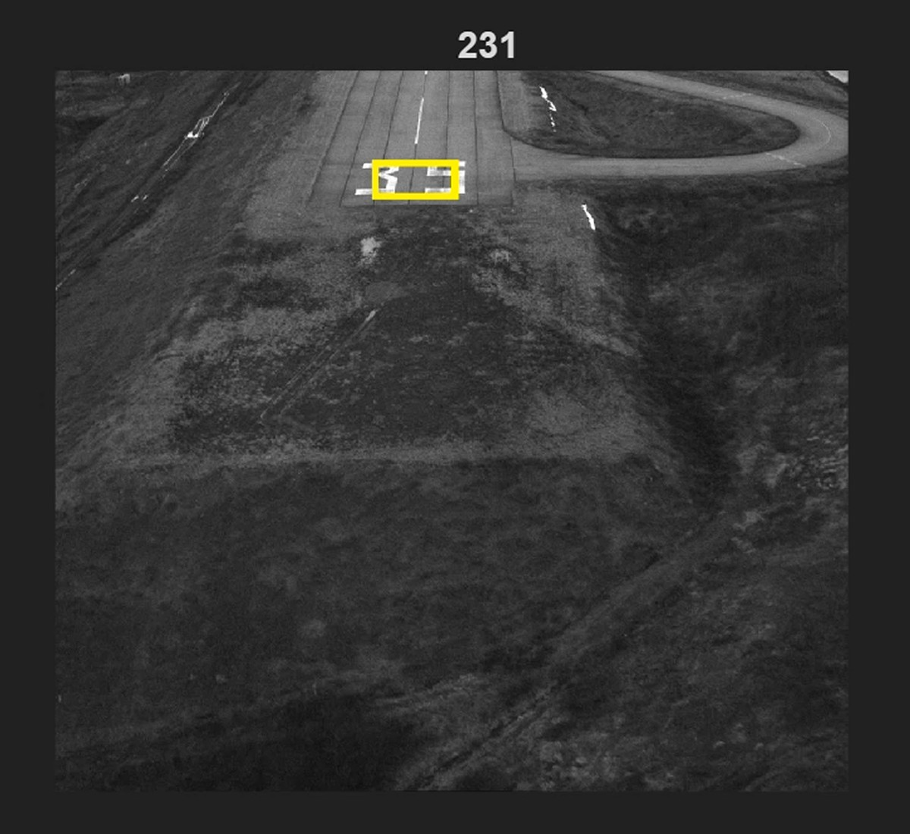

Object Tracking: Lucas-Kanade & Matthew-Baker
Draw a box around something in the first frame of a video, and these trackers keep the box on it as it moves. I implemented two classic affine template trackers from scratch: the standard Lucas-Kanade method and the faster inverse-compositional Matthew-Baker method, and analyzed exactly where and why each one breaks.

01 Overview
Both trackers work the same way at a high level: each frame, they solve for the warp that best re-aligns the current frame back onto a template saved from the start, then move the box by that warp. The difference is in how efficiently they do it.
I built this to really understand template alignment and optical flow, not just to make a box follow a car, but to derive the math behind it and study its limits.
02 How I built it
-
Lucas-Kanade tracker
The forward-additive method: each frame I warp the current image and its gradients, measure the error against the template, assemble the steepest-descent images, and solve the normal equations for a small parameter update, iterating until it converges.
-
Matthew-Baker tracker
The inverse-compositional method precomputes the Jacobian and Hessian once from the fixed template (since they never change) and reuses them every iteration, making it noticeably faster. Updates are applied by composing the inverse warp.
-
The underlying math
I derived the affine warp Jacobian by hand, worked out why the inverse-compositional approach costs less per iteration, and handled a subtlety in the provided warp function (it samples at the inverse warp, so I had to pass
inv(W)). I also added a guard so a warp that goes singular degrades gracefully instead of crashing. -
Testing & failure analysis
I ran the trackers on a car sequence and a runway sequence and analyzed the failure modes: plain Lucas-Kanade drifts because it's translation-only and accumulates error; Matthew-Baker holds much longer but breaks under the lighting change of a bridge shadow, and diverges on the runway as scale grows against a low-texture background.
03 What I learned
- Template alignment and optical-flow tracking from first principles
- Image warping, gradients, and the least-squares math behind the update
- Deriving a Jacobian and Hessian, and why precomputation buys speed
- Numerical robustness: guarding against singular / diverging warps
- Rigorously analyzing why an algorithm fails, not just when it works